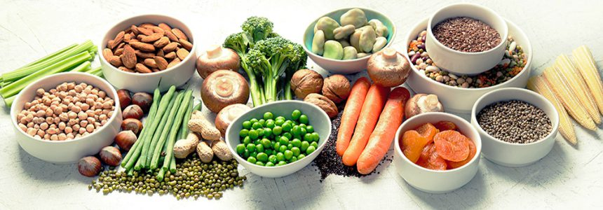

A vegan diet is richer in nutrients.

Vegan diet involves eliminating meat, dairy, and other animal products. This leads us to rely more heavily on other foods such as whole grains, fruits, vegetables, beans, peas, nuts, and seeds. Since these foods make up a substantial portion of vegan diet, it can lead to a higher consumption of rich vitamins and minerals. However, to reap these benefits, one must carefully plan their diet to ensure consumption of these rich nutrients.
A vegan diet can help you lose excess weight.
According to numerous studies performed, it is clear that vegan diets help promote weight loss without the need to actively focus on cutting calories
A vegan diet can lower blood sugar levels and improve kidney function.
Vegans tend to have lower blood sugar levels and higher insulin sensitivity which lowers the risk of developing diabetes and its complications. Even if you do not go fully vegan, increasing your intake of healthy plant-based foods and decreasing your intake of meat- and dairy-based foods may reduce your type 2 diabetes risk.
A vegan diet lowers the risk of getting cancers.
And according to the National Cancer Institute, eating higher amounts of plant-based foods reduces your risk of several types of cancer, including stomach, lung, mouth, throat, colon, prostrate and pancreatic cancers.
A vegan diet is linked to lower risk of heart disease.
Vegan diets are effective in reducing blood sugar, LDL (bad) cholesterol and total cholesterol levels. Studies comparing vegans with non-vegetarians and vegetarians report that vegans have a 75% lower risk of developing high blood pressure. These studies have also concluded that vegans have a lower risk of dying from heart disease.